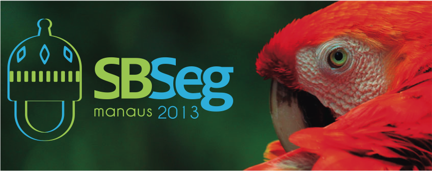

Promoção Sociedade Brasileira de Computação (SBC) · Realização Instituto de Computação (IComp) / UFAM
O Simpósio Brasileiro em Segurança da Informação e de Sistemas Computacionais (SBSeg) é um evento científico promovido anualmente pela Sociedade Brasileira de Computação (SBC). Representa o principal fórum no país para divulgação de resultados de pesquisas, debates, intercâmbio de ideias e atividades relevantes ligadas à segurança da informação e de sistemas, integrando a comunidade brasileira de pesquisadores e profissionais atuantes nessa área.
A 13ª edição do simpósio foi realizada de 11 a 14 de novembro de 2013, em Manaus, Amazonas, reunindo a trilha principal de sessões técnicas, palestras nacionais e internacionais, minicursos e diversos workshops e eventos satélite.
Conceitos, técnicas, ferramentas e estudos de caso.
Fundamentos e esquemas criptográficos resistentes a computadores quânticos.
Ataques & defesas em plataformas embarcadas.
Infraestrutura de autenticação e de autorização para a Internet das Coisas.
Incentiva a participação de recém-graduados e alunos de graduação na produção e divulgação de trabalhos científicos em segurança. Os três melhores trabalhos foram premiados.
Sessões técnicas, palestra, Salão de Ferramentas e o Programa de Gestão de Identidades (PGID).
Sessões técnicas dedicadas à perícia e investigação digital.
Espaço de aproximação entre academia e o setor produtivo em segurança.
O simpósio foi sediado no Studio 5 Centro de Convenções, em Manaus, capital do Amazonas — porta de entrada da Amazônia e um dos principais polos de tecnologia da região Norte.
Manaus é atendida pelo Aeroporto Internacional Eduardo Gomes (MAO), com voos diretos das principais capitais brasileiras.